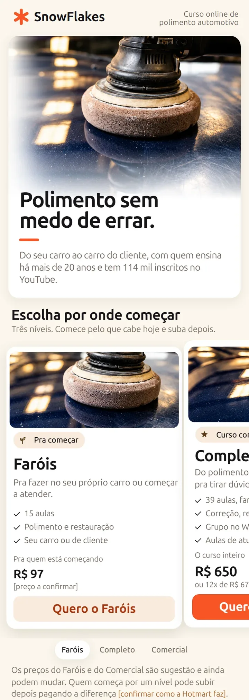
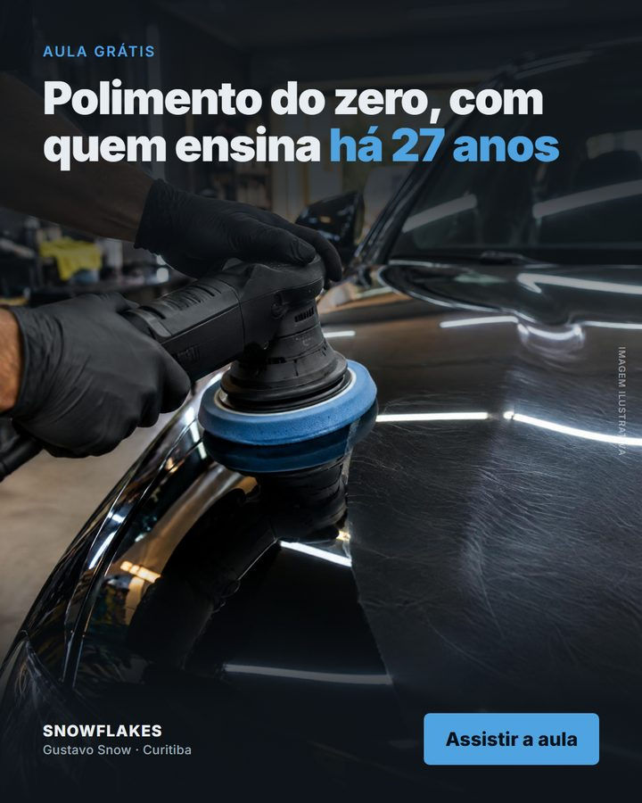
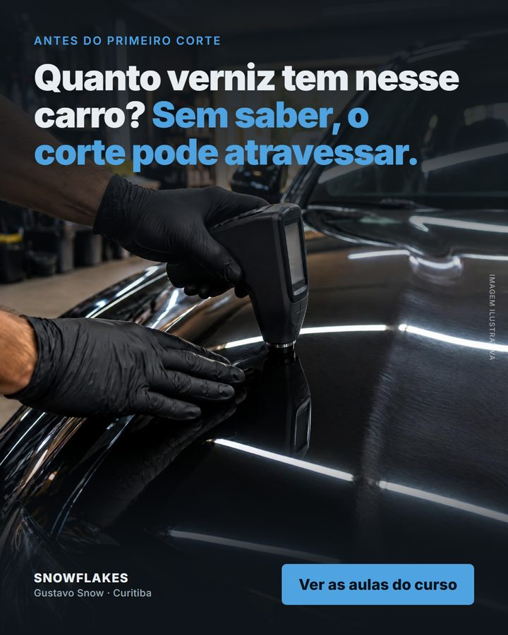
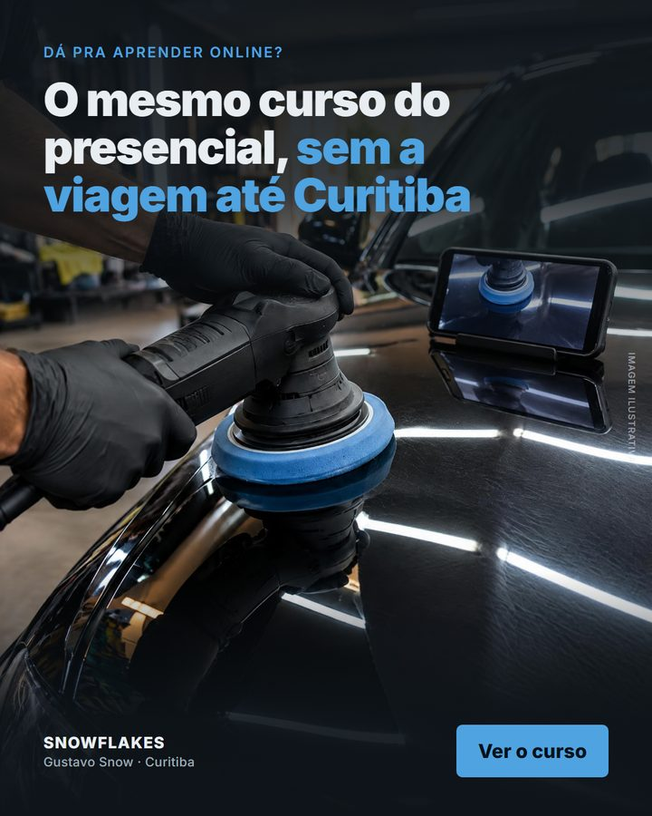

Esta é a primeira versão do plano, feita pra vocês lerem com calma e ajustarmos juntos. Já dá pra ver o que muda, em que ordem e como medimos. Onde ainda falta uma informação de vocês, está marcado assim:
"O foco principal é se manter em evidência." Ser visto por quem está entrando agora no mercado e ainda não conhece o Snow. Gisele, áudio de 23/10
Gente nova conhecendo o Snow, todo mês.
O curso de polimento na Hotmart, sem perder a essência do conteúdo.
Do fim de 2026 ao 1º semestre de 2027, pra ter um gráfico com antes e depois.
E os limites que vocês colocaram, que o plano respeita do começo ao fim: conteúdo sério e educativo, o Snow gravando do jeito dele (sem roteiro na mão), resposta pessoal no comentário (nada de robô frio) e nenhuma promessa de dinheiro fácil.
O que vimos e medimos nos canais públicos, e os totais da Hotmart que vocês mandaram em 26/10.
registros de venda do online de janeiro a outubro de 2026, com R$ 5.989 de receita líquida. Uma venda a cada duas ou três semanas desde agosto.Hotmart, relatório de vendas de 01/01 a 26/10/2026
registros só em novembro e dezembro de 2025, com R$ 7.312 de receita líquida: mais do que os dez meses de 2026 juntos.Hotmart, relatório de 01/11 a 31/12/2025
no YouTube pra quem já procura "curso de polimento automotivo" e "polimento para iniciantes". O Snow já é a referência pra quem decidiu aprender.Busca no YouTube, 22/10
dos 20 primeiros nas buscas de quem ainda não pensa em profissão: "farol amarelado", "como tirar arranhão do carro", "pintura queimada". É por onde a maioria entra no assunto.Busca no YouTube, 22/10
das visualizações do canal vêm de Shorts. No maior canal do nicho, são 74%. O vídeo curto é a porta de quem nunca ouviu falar do Snow.Contagem dos canais @SnowFlakesTv e @VenetoStudio, 22/10
visualizações no vídeo com outro canal ("1 produto 1 boina", 29/09). A mediana dos vídeos longos recentes é de 1.850. Colaboração traz público novo de uma vez.YouTube, 100 vídeos longos mais recentes, 23/10
caracteres até o link do curso nas descrições dos vídeos de setembro e outubro. O comentário fixado e o primeiro link da bio levam pra Shopee.Vídeos de 19/09, 08/10 e 17/10; bios do Instagram e do TikTok, 22/10
é o vídeo da página de vendas do curso, com o preço antigo. A página ainda tem um texto de exemplo do modelo da Hotmart no lugar da resposta, e não mostra o nome do Snow, a lista de aulas, depoimento nem o grupo do WhatsApp.Página do curso na Hotmart, 22/10
Em uma frase: quem procura curso já acha o Snow. O que falta é ser visto por quem ainda não procura, um caminho mais curto pra quem já quer comprar e uma opção pra quem ainda não tem R$ 650.
O orgânico usa o que o Snow já grava, sem verba, apontado pro curso. O pago pega o que já funciona e leva pra mais gente. Os dois terminam numa página nova, com o checkout da Hotmart.
Primeiro arrumamos a oferta e o caminho até o curso, depois a página, e só depois entra o anúncio. Pagar pra trazer gente a uma página que não convence é dinheiro que não volta.
Hoje o curso de polimento tem um preço só. Quem não tem R$ 650 agora assiste o grátis e vai embora. Nos comentários do canal aparece gente dizendo que está sem dinheiro pro curso agora e segue aprendendo pelos vídeos. Com três níveis, cada um começa pelo que pode e sobe depois, e o completo fica como referência de valor. Por isso montamos o plano inteiro em cima dos três: a página, os anúncios e a meta.comentários na aula grátis do Snow de 2023 (o de dinheiro tem 33 curtidas), lidos em 22/10
Dividimos pelos títulos das aulas, sem gravar nada novo, pra dar tempo de estar pronto na Black Friday. Quem sabe o que o aluno precisa em cada etapa é o Snow: ele pode mudar aula de nível, juntar, tirar ou sugerir gravar algo. O que ele decidir é o que vale.grade do curso no Hotmart Marketplace (24 aulas + 15 de faróis), lida em 23/10
| Nível | O que entra | Pra quem | Preço sugerido |
|---|---|---|---|
| Faróis | As 15 aulas de polimento e restauração de faróis. Já existe na Hotmart | Quem quer começar com pouco equipamento | R$ 97 |
| Polimento comercial | Aulas 1 a 13: acessórios, iluminação, máquina, segurança, inspeção, micrômetro, tintas e vernizes, fases do polimento e polimento comercial | Quem quer atender carro de cliente comum | R$ 347 |
| Completo | Tudo: mais pequenas áreas, repintura, ceras, vitrificação, remoção de riscos, plásticos e faróis, com o grupo do WhatsApp e as aulas de atualização | Quem quer fazer o serviço completo, da correção à proteção | R$ 650 |
Fica abaixo da entrada dos outros cursos do nicho, que começam entre R$ 119,90 e R$ 197 (o de faróis do maior canal custa R$ 197). Cabe pra quem está com o dinheiro contado.páginas de venda do Veneto Studio e da Escola para Detailers, lidas em 22 e 24/10
Pouco mais da metade do completo. Assim, subir pro completo custa R$ 303 e traz algo que se vê: correção, repintura, vitrificação, faróis e o grupo. Se o meio ficar perto demais do completo, ninguém compra o meio; longe demais, ninguém sobe.conta nossa, a partir dos outros dois preços
É o preço de hoje, sem mexer, como conversamos em 21/10. O presencial fica acima dele na página, como comparação.conversa de 21/10; preço do presencial: áudio da Gisele, 23/10; checkout da Hotmart, 22/10
É o motivo mais forte pra subir de nível. Se o Snow preferir o grupo em todos, o preço do meio desce.
Paga só a diferença. Como fazer isso na Hotmart confirmamos com vocês.
Os preços são sugestão nossa, com o motivo de cada um, e estão abertos: quem decide são vocês. O preço da Black Friday definimos junto. Micro pintura, vidros e captação de clientes estão na descrição do curso e não na grade; se existirem, entram no completo.
A Gisele sugeriu um curso por semana pra começar. É um bom primeiro degrau. Com os três níveis, propomos ir além, com mais tempo pra chegar: o prazo de 6 a 8 meses que vocês mesmos deram.áudios da Gisele de 23/10 (prazo) e 26/10 (um por semana); "hoje": relatório da Hotmart de 01/01 a 26/10/2026
| Quando | Alunos por mês | Receita líquida do online por mês |
|---|---|---|
| Hoje | uns 2 | uns R$ 600 |
| Até a Black Friday | Tudo no ar: oferta, caminho, página e anúncios. O que a Black vender, mostramos ao lado da de 2025 | |
| Fevereiro de 2027 | 10 | R$ 2.500 |
| Abril de 2027 | 18 | R$ 4.000 |
| Junho de 2027 | 25 | R$ 6.000 |
Com três preços, contar só curso engana: dez Faróis valem menos que dois Completos. Os alunos mostram o alcance; a receita mostra o que fica no bolso.
Em novembro e dezembro de 2025 foram uns 17 registros por mês, sem nenhum anúncio. Com uma porta de R$ 97 e anúncio, 25 é um passo a partir do que o público já fez.relatório da Hotmart de 01/11 a 31/12/2025: 35 registros
Se um mês ficar abaixo, mostramos com os números onde parou (anúncio, página ou oferta) e ajustamos antes de subir a verba.
A conta de junho supõe 12 Faróis, 8 Polimento comercial e 5 Completo por mês, aos preços sugeridos. Se os preços mudarem, a meta em receita fica e a de alunos se ajusta.
Cada etapa tem o seu jeito sem verba e o seu jeito com verba. A pessoa pode entrar por qualquer uma, mas todas levam pra de baixo.
É a mudança mais barata do plano e a primeira a sair. Não mexe no vídeo, só no que está em volta dele.
| Onde | Hoje (visto em 22/10) | Como fica |
|---|---|---|
| Comentário fixado YouTube, todo vídeo novo | Link de produto na Shopee | "Quer aprender polimento do começo ao fim comigo? O curso completo está aqui: [link]. Os produtos deste vídeo estão na descrição."…?src=yt-fixado |
| Descrição primeira linha | Curso no fim, depois das hashtags, entre os caracteres 2.000 e 3.000 | "Curso online de polimento com o Snow: [link]". A loja desce pra 2ª linha.…?src=yt-desc |
| Bio Instagram, TikTok, YouTube | 1º link vai pra Shopee; nenhum se chama "Curso" | "Professor de polimento há 27 anos · Curso online". 1º link: o curso. 2º: a loja.…?src=ig-bio · tt-bio · yt-bio |
O src no fim de cada link é o que faz a Hotmart mostrar de onde veio cada venda: do fixado, da bio, do anúncio. É assim que medimos sem achismo.
Não é roteiro. São quatro momentos, e o Snow fala com as palavras dele. O que importa é a hora certa.
Entrega o que o título promete. Nada de curso aqui.
"Quer aprender isso do zero, na ordem certa? O curso tá no comentário fixado."
"Isso eu explico com calma na aula de micrômetro do curso."
"Quem quer atender cliente sem medo de errar, tá tudo no curso. Link no fixado."
Nos Shorts e Reels, um texto na tela no fim: "curso completo, link no perfil". Entregamos pra equipe de vocês um guia de uma página com isso e com o jeito de escolher os cortes.
Uma página com a marca SnowFlakes, feita pra quem chega pelo celular, com medo de errar e com o dinheiro contado. Os três níveis aparecem logo no começo, cada um com o preço e o botão do checkout. O pagamento continua pela Hotmart, com a garantia de 7 dias.

Abrir a páginaA promessa honesta. Polimento sem medo de errar, do seu carro ao carro do cliente. Nada de "fique rico".
Os três níveis, logo no começo. Lado a lado, cada um com o que ensina, o preço e o botão do checkout dele. A barra de baixo vira a compra do nível que está na tela.
Pra quem é, e pra quem não é. De quem só quer cuidar do próprio carro a quem vai atender cliente. Quem procura dinheiro rápido sem praticar não é o aluno, e dizer isso dá confiança pra quem é.
Quem ensina. Os anos de bancada, o canal desde 2010 e os 114 mil inscritos. É a resposta pro medo de golpe.
As aulas, na ordem do serviço. Equipamento, ler a pintura, polir, corrigir, proteger e faróis, cada etapa dizendo em que nível está.
Os dois medos de quem começa. Estragar a pintura, e achar que o grátis do YouTube basta.
Quem fez o curso. Antes e depois de aluno e print do grupo, sempre com autorização.
O presencial como comparação. O mesmo conteúdo do curso de Curitiba, sem a viagem.
As perguntas de verdade. Tiradas dos comentários do canal.
A página já está no ar como prévia, fora do Google. As fotos são ilustrativas, feitas só pra prévia: na versão final entram fotos reais de vocês. O que aparece entre [colchetes] na página é o que falta confirmar com vocês (preço dos níveis novos, link de checkout, os anos de ensino, fotos e depoimentos).
Se a Hotmart demorar pra aprovar o nível do meio, a página sobe com Faróis e Completo, que já existem, e ganha o meio assim que ele sair.
Dez anúncios diferentes, cada um falando de uma dor de quem está começando. Cinco de porta, pra quem nunca viu o Snow (aula grátis, farol, medo de errar, opinião técnica, quem já lava carro). Cinco de dúvida, pra quem está quase comprando (dinheiro, "o grátis basta", aprender online, golpe, quanto cobrar). Três deles, em prévia. As imagens são ilustrativas, só pra mostrar o formato: no anúncio de verdade entra o trecho do vídeo do Snow.cada dor e cada dúvida saiu de comentários reais no canal do Snow e em canais do mesmo público, lidos em 22/10



Nós escrevemos a ficha de cada anúncio (o trecho, o texto, o título). A equipe de vocês corta do material bruto, como já faz com os cortes. Nós subimos, acompanhamos e lemos o resultado.
Instagram e Facebook. A Hotmart avisa o Meta de cada venda, e ele aprende a achar mais gente parecida com quem comprou.
Pela venda de cada anúncio, olhando a semana, nunca o dia. O que vende ganha versão nova; o que não vende sai.
Thumbnails novas, com fotos e frames reais do Snow, mesma identidade em todas. Começamos pelos vídeos que viram anúncio ou porta: aula grátis e farol.
Fica pra depois do primeiro mês, e só se houver gente procurando curso online por lá.
Evidência, em número, é gente que ainda não segue o Snow vendo o Snow. Seis alavancas, da mais barata pra mais cara:
| Alavanca | O que fazer | Por quê |
|---|---|---|
| Mais cortes | Cada vídeo longo vira 2 cortes, e cada corte sai em Shorts, Reels e TikTok. 3 longos por semana viram 18 posts curtos, sem gravar nada a mais | Shorts são 19% das views do Snow e 74% no maior canal do nicho |
| Dono do carro | 1 vídeo longo por mês nas buscas em que ele não aparece: farol amarelado, arranhão, pintura queimada | É por onde a maioria entra no assunto |
| Formatos fixos | "Funciona?" no sábado, "Erro da semana" na quarta, "A ou B?" nos curtos | Os três estão entre os mais vistos dos canais do nicho |
| Colaboração | Uma a cada dois meses, com canal de carro de fora da estética | O vídeo com outro canal fez 61,9 mil |
| Eventos | Conteúdo do evento e QR code do curso no stand e na palestra | Jaguaruna, Fortaleza, Salvador e São Paulo já estão na agenda |
| Impulsionar | Vídeo que passou de duas vezes a média ganha anúncio pra quem não segue | Só com verba |
Vídeos acima da média de antes, % de quem assiste e ainda não é inscrito, aparecer nas buscas de dono de carro, alcance de quem não segue nos Reels, inscritos e seguidores novos. E, do lado da venda: vendas por origem e custo por venda.
Hoje os produtos que o Snow indica ficam em links soltos: no comentário fixado, na descrição e no primeiro link da bio, no lugar onde deveria estar o curso. A ideia é juntar tudo isso num grupo de WhatsApp só de ofertas e produtos. Quem quer saber o que o Snow usa, e quando está em promoção, entra ali. Os links de produto saem do caminho do curso, e os produtos ganham um lugar próprio que cresce junto com o alcance.
Quais links e parcerias vocês têm hoje (Shopee comum ou acordo com marca, comissão, cupom), o que mais vende e quanto rende. O formato do grupo sai daí.
O grupo dos alunos continua só de quem comprou. O de ofertas é aberto a quem quiser. Assim o curso não vira vitrine.
Pelo link no vídeo e na bio, e por anúncio. A Shopee não paga comissão de link divulgado em anúncio pago, então o anúncio leva pro grupo, nunca direto pro produto.blog oficial da Shopee, programa de afiliados, lido em 26/10
Só a equipe posta: o produto que o Snow usa, com o motivo técnico em uma linha, cupom e promoção quando houver, e o curso nas datas certas.
Quantos entraram e de onde, os cliques e as vendas dos links do grupo, e quantos compraram o curso por lá.
Só entra produto que o Snow usa de verdade, com o porquê técnico. É isso que separa o grupo dele de um grupo de promoção qualquer.
A verba de anúncio sai do cartão de vocês direto pro Meta. O nosso trabalho é à parte. Quanto mais verba, mais públicos diferentes rodam ao mesmo tempo, e mais rápido se descobre de onde vem o aluno que custa menos.
| Faixa | Por mês | Como fica montado | O que isso traz |
|---|---|---|---|
| Sem verba | R$ 0 | Nenhum anúncio | O caminho, a página e o conteúdo levando pros três níveis. O alcance cresce no ritmo do canal |
| Começo R$ 30 a R$ 50 por dia | R$ 900 a R$ 1.500 | 1 campanha de vendas, 1 público aberto, os 10 anúncios | Gente nova chegando todo dia, e a resposta de quais anúncios trazem aluno e por qual nível ele entra |
| Começo com retorno R$ 50 a R$ 100 por dia | R$ 1.500 a R$ 3.000 | A de cima, mais um público de retorno: quem visitou a página ou interagiu com o Snow e não comprou, com os anúncios de dúvida (preço, golpe, "dá pra aprender online?") | Volta em quem quase comprou com a resposta pra dúvida dele, em vez de deixar essa pessoa esfriar |
| Escala R$ 100 a R$ 200 por dia | R$ 3.000 a R$ 6.000 | Três públicos novos lado a lado (aberto, interesse em estética automotiva, parecido com quem segue o Snow), mais o de retorno | Compara de onde vem o aluno mais barato e põe a verba nele. Dá fôlego pra Black Friday |
Com os preços sugeridos e a mistura da meta, cada aluno novo deixa em média uns R$ 260 líquidos. A verba se paga quando cada R$ 260 investidos trazem pelo menos um aluno. Sugerimos começar numa faixa e subir só quando a de baixo se pagar; quem decide subir são vocês. A faixa sugerida vai junto com o investimento no nosso trabalho.preços sugeridos acima; taxa da Hotmart pelo print de 26/10 (R$ 583,16 recebidos numa venda de R$ 650)
Foto do "antes" de tudo: página, fixado, bios, vendas da Hotmart. Sem ela não tem como mostrar o "depois". O Snow revisa os três níveis e os preços.
Os níveis novos criados na Hotmart. Links com origem, pixel na Hotmart, fixado, 1ª linha e bio levando pro curso. Guia do vídeo pra equipe e as pautas do primeiro mês.
Página nova no ar, com os três níveis e o checkout da Hotmart.
Os 10 anúncios no ar, todos no mesmo dia.
Vendas por origem, custo por venda e gente nova vendo o Snow, lado a lado com o "antes".
Mais anúncios no formato que vendeu, colaborações, Google se houver busca. Leitura da meta em fevereiro, abril e junho.
Novembro e dezembro de 2025 renderam mais que os dez meses de 2026, e os maiores do nicho já estão com a oferta deles no ar. Com os três níveis e anúncio, só dá tempo se começarmos até 30/10, com o Snow revisando a divisão até lá: níveis na Hotmart até 04/11, página até 11/11, teste de 12 a 19/11, oferta de 20 a 30/11. Depois disso, novembro serve pra arrumar o caminho e a página, e os anúncios começam em janeiro.relatórios da Hotmart enviados em 26/10; ofertas dos concorrentes na Biblioteca de Anúncios do Meta e nas páginas deles, 23 e 24/10
Leiam com calma e mandem o que quiserem mudar, do jeito que for mais fácil, por mensagem ou áudio. Os três níveis, a meta e o formato do grupo vamos acertando por aqui, e com isso fechamos a faixa de verba e o investimento no nosso trabalho.